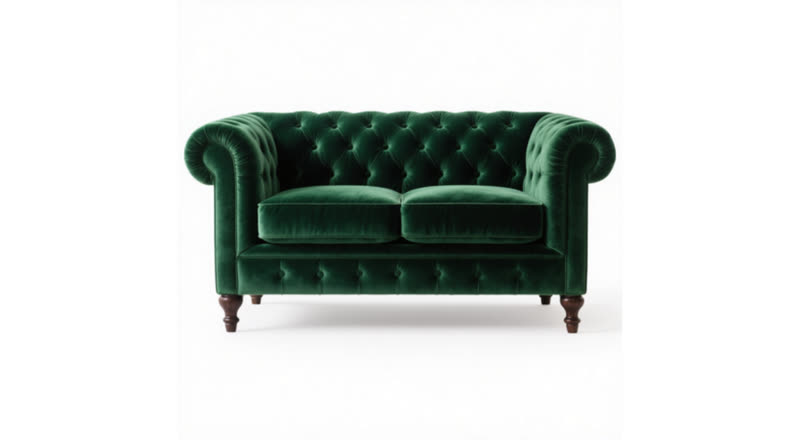

A unified autoregressive framework for interactive video generation and editing — six tasks on one DiT backbone, distilled into a 4‑step causal model that streams frames as it generates them.
Streaming edit · drag to compare
One 30 s take, edited in a single causal pass
Abstract
Interactive video generation and editing are becoming increasingly important for creative design. EditStream unifies multiple video creation and manipulation tasks within a single DiT-based model through flexible task-specific conditioning, and further transforms it into a fast, few-step autoregressive model for efficient streaming. It supports Text-to-Video, Image-to-Video, Video-to-Video, Editing Propagation, Reference-guided Video Editing, and Camera Pose Change — enabling flexible control over video generation, transformation, and editing within one system.
To make the unified model practical for interactive use, we develop a two-stage distillation approach that combines Velocity Moment Matching (VMM) with autoregressive unrolling. VMM matches conditional velocity moments at student-reached intermediate states to preserve generation quality and motion, while unrolling exposes the student to its own autoregressive predictions to improve temporal stability. Together, they alleviate common challenges in few-step autoregressive video generation — over-saturation, degraded motion, temporal instability, and complex training — and bridge high-quality diffusion-based video models with interactive creative workflows.
Method
Two ideas do the work: a conditioning interface that accepts every task through the same two ports, and a distillation recipe that reaches a causal few-step student without ever causalizing the teacher.
01 Unified conditioning
Signals that share the output's pixel grid are stacked onto the noisy latent along the channel axis, so attention length never grows as controls are added. Signals that do not — a reference image, an edited first frame — are appended as extra tokens, where self-attention can do in-context transfer.
| Task | Conditioning it uses | Port |
|---|---|---|
| Text-to-Video | prompt only | — |
| Image-to-Video | first frame locked at timestep 0 | channel |
| Video-to-Video | source video | channel |
| Editing propagation | source video + edited first frame | channel + token |
| Reference-guided editing | source video + reference image | channel + token |
| Camera pose change | warped view + validity mask | channel |
02 Distillation pipeline
The teacher's attention mask is never changed. Causality enters only through the noising pattern during adaptation, and through the student's own block-causal attention once distillation begins.
Full multi-step bidirectional DiT trained across all six tasks with the conditioning interface above.
25–50 steps · full attention
Fine-tuned on a mixture of full-sequence, first-block cold-start and prefix–suffix objectives: one 3-frame block is noised while its neighbours stay clean at timestep 0.
still bidirectional
Single-block Velocity Moment Matching against the teacher-forced teacher reaches a usable causal student, with no precomputed ODE-trajectory dataset.
200 iterations · vs ≈5,000 for ODE init
The student generates every block end-to-end through its own KV cache, exactly as at inference; the velocity correction is queried along that self-generated trajectory.
800 iterations · 4-step causal student
03 The VMM objective
The student is corrected by the velocity residual between the teacher and an auxiliary model that tracks the student's current distribution — evaluated at the state the student itself reached, not at a state sampled from the data. Warm-up and unrolling differ only in where that state comes from.
Speed
Wall-clock numbers from this release's own profiling sweep — 141 frames at 1280×704, single GPU, warm run, identical checkpoint across all rows.
Frames per second · higher is better
1280×704 · 141 frames
Average FPS over the whole call, warm run. The 4-step student reaches its first decoded frame in 0.9 s and holds 16.1 fps in steady state once the pipeline is full; the teacher must finish all 50 steps over the whole clip before any frame exists. On the V2V path the same pipelined configuration reaches 15.48 fps against the teacher's 1.13.
Results
All clips are output of the released 4‑step causal student, generated in a single streaming pass and recompressed from native 1280×704 for the web.
Generation from a prompt alone, with no source frame. Per-clip throughput is from the same profiling run as the chart above.
Text-to-Video
A golden retriever puppy playing in a sunlit meadow full of wildflowers, chasing a butterfly, soft depth of field, warm afternoon light, cinematic 35mm look.
11.91 fps steady-state
Text-to-Video
A humpback whale breaching out of a stormy ocean under dramatic gray clouds, powerful splash, seabirds scattering, wide cinematic shot.
11.62 fps steady-state
Text-to-Video
Aerial drone shot of a dense futuristic city at night, neon signs reflecting off wet streets, flying cars weaving between skyscrapers, cyberpunk atmosphere.
11.64 fps steady-state
Text-to-Video
Close-up of an elderly woman's weathered hands kneading bread dough in a rustic kitchen, flour dust floating in warm window light, shallow depth of field.
12.21 fps steady-state
Instruction-driven scene edits on arbitrary source clips, with identity, pose and speaking performance preserved. Four further edits beyond those in the comparison viewer above.
Video-to-Video
Restyle the scene as a Kyoto temple garden under falling snow: a weathered timber veranda, a snow-capped stone lantern, a frozen koi pond and a shoji screen glowing softly from within.
Video-to-Video
Restage the interview on the casting floor of a steel foundry: a ladle tipping white-hot molten steel, showers of orange sparks, blinding glare throwing hard flickering shadows.
Video-to-Video
Restage the interview at the edge of a terraced rice paddy at dawn: flooded emerald paddies mirroring a pale pink sky, low ground mist, a wide conical straw hat tilted back from his face.
Video-to-Video
Restage the interview at a tiny Tokyo ramen stall on a rainy night: hanging red paper lanterns, a noren curtain, warm lantern glow cutting through steam with cool neon spill from outside.
A subject from a reference image is transferred into the source video while the rest of the scene holds still — the token-concatenation port from the method section.
Source video

Reference image · token port
Replace the sofa with a classic Chesterfield sofa upholstered in deep emerald green velvet. All other parts of the video must remain unchanged.
The source is re-projected along a new camera trajectory, leaving holes where the new viewpoint reveals previously occluded content. A validity mask tells the DiT which pixels are real and which must be synthesised.
Warped view · holes = disoccluded
Validity mask · channel port
A brown bear is walking on rocks in a zoo. Camera follows a smooth s-curve, gently swaying side-to-side while pushing in.
BibTeX
@techreport{zhou2026editstream,
title = {EditStream: A Unified Autoregressive Framework for
Interactive Video Generation and Editing},
author = {Zhou, Yuqian and Zhou, Zhenghong and Wu, Zongze and
Smith, Cameron and Zhang, Richard and Luo, Jiebo and
Shechtman, Eli and Lin, Zhe},
institution = {Adobe Research},
year = {2026}
}
Thanks to Kai Zhang, Zhonghao Wang, and Yuchen Liu for their contributions to the VMM algorithm, and to Hailin Jin, Sylvain Paris, John Yang, Cynthia Lu, Jianming Zhang, Ashwin Ramesh, and Yiru Shen for discussions, guidance, and support throughout the development of the distillation framework.